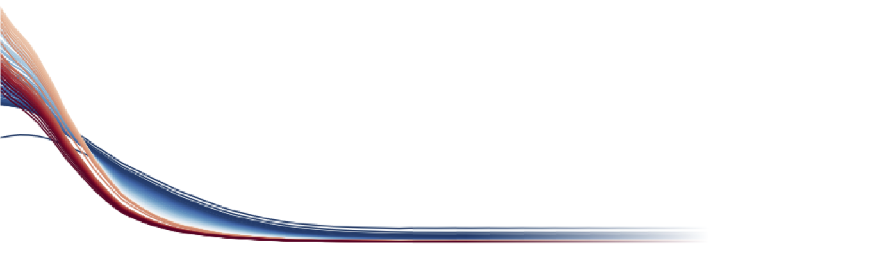

Toggle navigation
David C. Wallace
Home
Research
Publications
Resources
About
Contact
Tutorials and Tricks
Agilent UV/Vis kinetics data visualization and analysis using iPython, Pandas, and SciPy.
PPMS data visualization and curve fitting using iPython, Pandas, and SciPy.
Use
Vesta
to visualize Fermi surfaces computed using the Elk electronic structure code. (
Instructions
,
Python script
)
Data Analysis and Plotting Tools
iPython Notebook for rapid data visualization, analysis, and record keeping: (
Anaconda Scientific Python Distribution
)
Grace for making publication quality 2D plots: (
Grace Homepage
)
